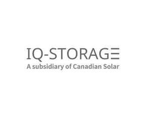

Trade Mark Journal No.2025/027 4 July 2025
UK00004187791 11 April 2025 (9,42)

- Class 9
- Energy storage systems; energy storage system for use with renewable energy; Electrical power systems; energy storage equipments composed of batteries, inverters, control systems, electronic devices and recorded software for the operation and performance of energy storage systems; energy storage systems for industrial and commercial applications; large format battery-based energy storage systems; solar power systems; energy storage systems consisting of electric storage batteries, battery management systems and electronic controllers for the foregoing; Batteries for clean energy storage for utility, renewable, commercial, and industrial customers; Batteries for storage of renewable energy; Energy storage banks in the nature of groups of accumulators and batteries; Batteries for storing solar, wind, wave power, and grid power; Electrical energy storage devices, namely, electrical storage batteries; Solar energy storage devices, namely, solar batteries; energy storage systems consisting of equipment and integrated software sold together as a unit to control the distribution, storage and management of solar energy generated by consumers and stored in electric storage batteries; energy storage systems consisting of equipment and integrated software sold together as a unit to control the distribution, storage and management of energy collected from the electrical grid and stored in electric storage batteries; downloadable computer software and firmware for monitoring, optimizing and regulating the storage, and discharge of stored energy to and from wirelessly connected electric battery apparatuses in the field of power management; downloadable computer software and mobile applications for detecting, responding to, and addressing faults in energy storage systems and their components, and producing notifications and reports as to same; downloadable software using artificial intelligence (AI) for analyzing, configuring, and monitoring the performance of energy storage systems, enhancing the feasibility and cost-effectiveness of battery storage; downloadable algorithm software for operating and controlling energy storage systems; inverters(electricity); transformers; voltage conversion apparatus; power controllers; switchgear; junction boxes (electricity); energy conversion apparatus; energy control devices; electrical control equipment for energy management; power banks; mobile power devices.
- Class 42
- Remote monitoring, metering and data analysis of energy usage and energy management systems; technology planning and consulting in the field of storage, distribution and transport of clean energy; technology planning and consulting in the field of batteries for clean energy storage for utility, renewable, commercial, and industrial customers; research, development, design and engineering of apparatuses and installations in the field of energy storage; research, development, design and engineering of apparatuses and installations in the field of renewable energy conversion; design, development, installation, updating and maintenance of computer software for use in managing, operating and/or optimizing energy storage systems; Software as a service (SAAS) services featuring software for use in managing, operating and/or optimizing energy storage systems; Providing online non-downloadable software for monitoring, optimizing and regulating the storage and discharge of stored energy to and from wirelessly connected electric battery apparatus; Providing online non-downloadable software for remote monitoring management and analysis of energy distribution and energy storage and providing analytics regarding energy distribution and energy storage.
Canadian Solar Energy Holding Company Limited
Representative: AIPU SHIDE IP LIMITED